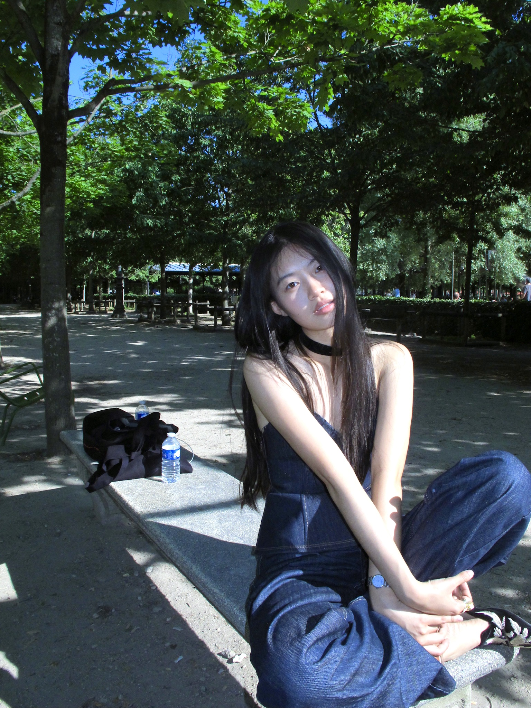

Exhibitions & brand communications展览活动策划与品牌传播
A working grasp of how media and brands circulate meaning — planning premium events and cultural programmes.深度理解媒体与品牌的传播逻辑，策划高端活动与文化项目。
I am Ruiqi Jin (靳睿琦). I study how images carry power — how high fashion organises looking, how brands build cultural authority, and how tradition gets remade in the present. I work as a researcher, curator and brand strategist, and I model on the side to keep one hand on the object of study.
我是靳睿琦。我研究图像如何承载权力——高级时装如何组织「观看」、 品牌如何构建文化权威，以及传统如何在当下被重新塑造。我以研究者、 策展人与品牌策略师的身份工作，并兼做模特，让自己始终与研究对象 保持一臂之距。

Paris · 2026From the Central Academy of Fine Arts to Paris-Kedge Business School, I trained simultaneously in art-historical method and in management. As a model I lived the discipline of being looked at; as a curator I learned to organise the looking; as a strategist I use both views to help brands build cultural authority.
从中央美术学院到 Paris-Kedge 商学院，我同时接受艺术史方法与管理学的 训练。作为模特，我亲身经历被观看的规训；作为策展人，我学习 组织观看；作为策略师，我用这两种视角帮助品牌构建文化权威。
The questions I keep returning to: how does the visual transmit power? How do brands construct cultural belonging through space and the body? How do traditional symbols survive — and become new — in the present?
我不断回到的问题是：视觉如何传递权力？品牌如何透过空间与身体 构建文化归属？传统符号如何在当下存活，并成为新的东西？
My current research focuses on scopic regimes in haute couture and the construction of cultural authority. I am preparing doctoral applications in Germany for 2026.
我目前的研究聚焦于高级时装中的视觉机制，以及文化权威的构建。 我正在准备 2026 年德国的博士申请。
Two degrees in parallel, one running concurrently. Art-history method on one side, management and marketing on the other; both feed the same research.
两个学位同时进行：一边是艺术史方法，一边是管理与营销；二者供养同一项研究。

创意产业管理与营销 · 硕士
M.A. Creative Industries Management & Marketing

艺术设计与管理 & 营销学 · 双学位本科
B.A. Art & Design Management and Marketing (Double Degree)
From brand pop-ups to intangible-heritage exhibitions to high-profile media events — different surfaces, the same method. Research as practice, practice as research.
从品牌快闪、非遗展览到高规格媒体活动——不同的表面，同一套方法。以研究为实践，以实践反哺研究。
 01 / 04
01 / 04
 02 / 04
02 / 04
 03 / 04
03 / 04
 04 / 04
04 / 04
For an independent Chinese designer brand, a Paris Fashion Week pop-up rebuilt from spatial narrative through media. A whole cultural language compressed into one afternoon under a tree.
为一个中国独立设计师品牌策划的巴黎时装周快闪， 从空间叙事到媒体传播完整重建。一整套文化语言， 被压缩进树下的一个下午。
A working grasp of how media and brands circulate meaning — planning premium events and cultural programmes.深度理解媒体与品牌的传播逻辑，策划高端活动与文化项目。

《Carving Warp, Engraving Weft》 exhibition — research and cultural-product translation, end to end.《雕经镂纬 · 典籍里的缂丝》展览 · 研究 · 文创转化的完整链路。

A media night at Longfor's hill-house retreat — full coordination from flow to scene to coverage.龙湖山居体验馆媒体之夜：从动线、场景到传播的完整统筹。
 01 / 04
01 / 04
 02 / 04
02 / 04
 04 / 04
04 / 04
From AntChain NFT galleries to the 《Site of the Fallen》 immersive show — redrafting the edge of “creativity” between generative tools and cultural critique.从蚂蚁链 NFT 画廊到《坜机之地》沉浸展，在生成式工具与文化批评之间重新拟稿“创意”的边界。
A two-track project on the silk-tapestry craft of kèsī: tracing its vocabulary, techniques and surviving works through historical texts, while rebuilding the loom, the gesture and the looking inside an exhibition hall.
以缂丝（kèsī）为中心的双轨项目：一边在典籍中 追踪它的词汇、技艺与传世作品，一边在展厅里重建 织机、手势与“观看”。


Kèsī is not “silk.”
It is a painting that speaks through cut weft.
缂丝不是“丝绸”。
它是一种以“通经断纬”为言说方式的画。

If kèsī was the most prestigious of Chinese silk crafts, why does it now survive in the hands of a few aging masters in remote towns? We decided to re-introduce them through the books — from Catalogue of Imperial Kesi Calligraphy & Painting to the Chinese-French Chinese Silk Literati Painting — so that text and machine could meet in the same room.
如果缂丝曾是中国丝绸中最高贵的工艺， 为何它如今只存于偏远小镇几位老匠人手中？我们决定 从典籍里重新介绍他们——从《秘殿珠林·缂丝书画录》 到中法双语的《中国丝绸文人画》——让文本与机械在 同一个房间里相遇。
The title wall lifted four characters: 《雕经镂纬》 — shuttles falling from a black overhead bay, threads pulled into a rising blue diagonal. Our abstract translation of the two gestures of the craft, and the visitor's first sentence after entering.
主视觉墙提出四个字：《雕经镂纬》—— 梭子从黑色顶棚垄落下，经纱被拉成一道上升的蓝色斜线。 这是我们对这门手艺两个动作的抽象翻译，也是观众进入 后读到的第一句话。
A working loom sat in the centre of the gallery for live demonstrations; on the other side, a wall of antique paintings with woven cushions invited visitors to sit and look at the centuries. The bilingual catalogue, commissioned for the opening, became the show's second output.
展厅中央是一架可现场演示的现役织机；另一侧，古画与蒃座 构成的低坐区请观众坐下来看看那些世纪。为开幕 编撰的中法双语画册，成为展览的第二个输出。
A media night at Longfor's Pathless Woods hill-house. We re-wrote a press visit as a night in the mountains — three photographable scenes, no scripted line, an official line that came out of the writers' own pens.
龙湖Pathless Woods山居的一场媒体之夜。我们把一次 媒体参访重写成山里的一个夜晚——三个可拍摄的场景、 没有脚本台词，一句出自写作者自己笔下的官方表述。


Re-write a “press visit” as a “night in the mountains.” Let the journalists choose to write for the brand themselves.
把“媒体参访”重新书写成“山里的夜晚”。让媒体老师主动为品牌写东西。
The afternoon opened with a 《Quietly, Before the Mountains》 banner; canopy and old trees marked the focal area. Dusk was a canopy-bar reception and a twenty-minute prompt; after dark came the lanterns in the valley, the solitary seats, and the unhurried conversations.
下午以《悠然·见山前》主题旗帜入场，天幕与老树划出重点区； 黄昏是天幕下酒会与二十分钟的思考题；入夜后是山谷里的串灯、 独坐、与那些不急不敢的对谈。
The site was split into four photographable scenes, each with a “write anything” prompt and a “don't write” blacklist. This carried the thesis idea of viewing distance onto the ground — not staging “being looked at,” but letting the brand be “seen.”
现场被拆成四个可拍摄场景，每个场景都有一份 “写什么都可以”的提示词，也有一份“不要写”的黑名单。这是把 论文里的“观看距离”思路带到现场——不安排“被看”，反而让品牌被“看见”。
The output was not only 5.2M+ in reach and 42 articles, but a 《Before the Mountains · Beyond the Stars》 field journal — which later became the project's official language for drawing guests.
输出不仅是 5.2M+ 的传播与 42 篇发稿，更是一本《山前 · 星天外》 现场手记——它后来变成了该项目后续招徕客人的官方语言。
A study of how contemporary haute couture houses build cultural authority through the visual and spatial organisation of the runway. Three maison case studies: Valentino, Avavav, Miu Miu.
研究当代高级时装屋如何通过秀场的视觉与空间组织来构建 文化权威。三个品牌案例：Valentino、Avavav、Miu Miu。
看与被看 — 高级时装中的视觉机制与文化权威构建
How do houses use bodies, space and light to define the legitimate taste? Three maison case studies compare strategies for managing distance between brand and viewer.
 01 / 03
01 / 03 02 / 03
02 / 03 03 / 03
03 / 03Ritual symmetry, a far gaze and cold light build an “unapproachable” cultural authority.以仪式化的对称、远距凝视与冷光，构建“不可亲近”的文化权威。
Disordered events like “falling” deconstruct the solemnity of looking, flipping the power relation back to the audience.通过“摔倒”等失序事件解构观看的庄严性，把权力关系翻面给观众。
 01 / 03
01 / 03 02 / 03
02 / 03 03 / 03
03 / 03Youth culture and everyday body language remake the approachability of haute couture.用青年文化与身体语言的“日常感”，重塑高级时装的可接近性。
The four propositions the thesis returns to. Each is testable; each has practical implications for how brands organise their image.
论文不断回返的四个命题。每一个都可被检验，每一个都对品牌如何组织自身形象具有实践意义。
A fashion show is an apparatus of visual power, not merely a display of clothes.
时装秀是视觉权力的装置，而非单纯的服装展示。
Brands organise “looking” through space, body choreography and lighting, thereby defining “legitimate taste.”
品牌通过空间设计、身体编排、灯光控制来组织“观看”，从而定义“合法的品味”。
The model's body undergoes a process of de-subjectification, becoming the brand's visual medium.
模特的身体经历“去主体化”过程，成为品牌的视觉媒介。
Different brands use different visual strategies to build cultural authority, each reflecting a different way of managing “distance.”
不同品牌使用不同的视觉策略来构建文化权威，这些策略反映了对“距离”的不同管理方式。
Modelling is where I learned what I now study. Standing in the looked-at position, you feel exactly how the body is disciplined, how the gaze is organised, how the brand turns presence into meaning. This section is half portfolio, half ethnography.
模特经历是我如今研究的起点。站在被观看的位置上，你能真切 感受到身体如何被规训、凝视如何被组织、品牌如何将“在场” 转化为意义。这一节是作品集，也是田野笔记。

Not a runway. A static exhibition, where models hold position for 3–4 hours while VIPs come close to look, touch the fabric, and photograph.
这不是走秀。一场静态展示，模特在原地站立 3–4 小时， VIP 客人走近观看、触摸面料、拍照。


Reach out about academic research, brand strategy, curatorial collaboration, or anything to do with visual culture. Mandarin / English.
欢迎与我交流学术研究、品牌策略、策展合作，或任何关于视觉文化的问题。中文 / English.